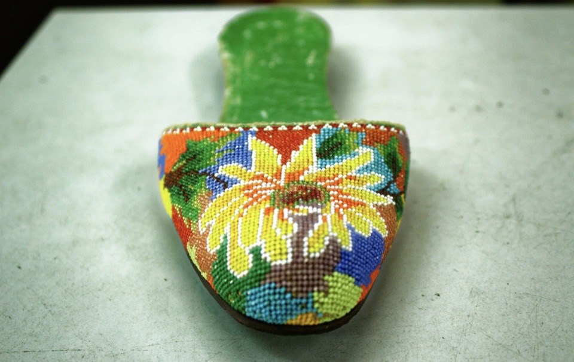
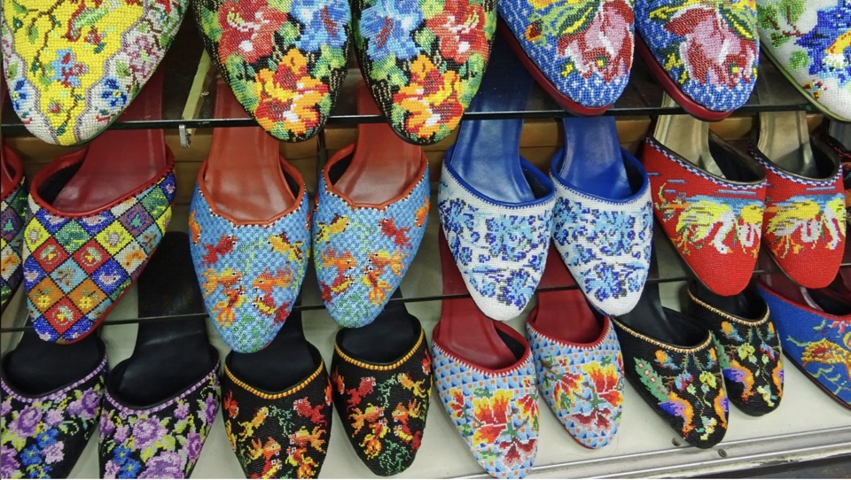
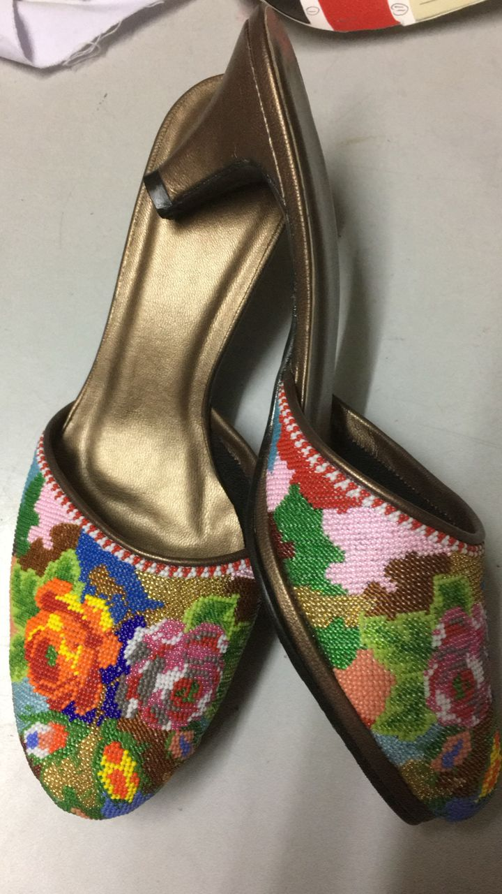
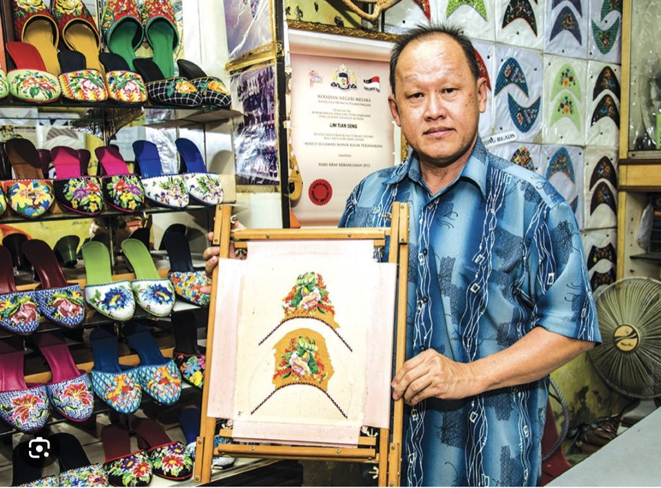
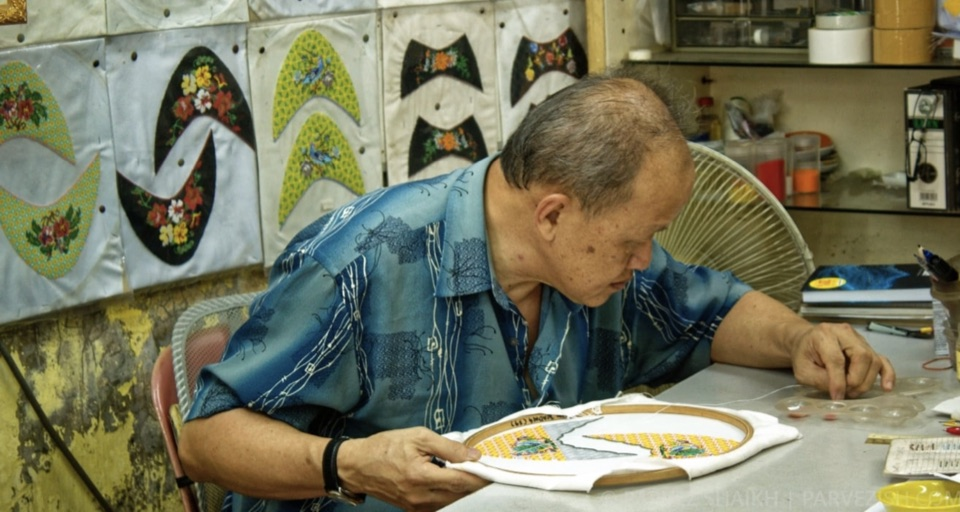

Manek Kasar
From MYR 388
Signature Peranakan motifs in coarse glass beads. Drawn from memory, balanced across both shoes without a template.
Hand-beaded Peranakan shoes from a single workshop on Jalan Tokong, Melaka. Drawn from memory, beaded one glass seed at a time, by Lim Tian Seng — since 2000.

Every pair is a commission. Choose by how long it will take — five days, one month, or two months — and the maker will draw the pattern fresh for you.

Signature Peranakan motifs in coarse glass beads. Drawn from memory, balanced across both shoes without a template.

Finer beadwork at a denser stitch count. The same vocabulary of motifs at a quieter, more saturated level of resolution.

Faceted, hand-cut beads that catch light from every direction. Accepted selectively. The hardest stitch in the workshop.
He apprenticed at fourteen, opened the shop on Jalan Tokong in 2000, and has been beading there every day since. There is no assistant. The pattern, the colour selection, the stitching — all of it is his hand.
He is the last maker in Melaka who designs and beads the Manek face himself.


The motif is drawn by hand on tracing paper, balanced across both shoes without symmetry tools — peonies, phoenixes, butterflies, lattice borders.
Glass seed beads sourced by the gross, sorted by hand under daylight. Colour is chosen to age — Peranakan palettes deepen, they do not fade.
One bead, one stitch, repeated for the count of the design. A Manek Halus face holds upwards of twelve thousand beads.
The beaded face is shaped over a wooden last, lined, and attached to the sole — leather or fabric, finished by the maker's own hand.
Each pair leaves with a hand-written card noting the grade, the bead count, and the dates the work began and ended.
UNESCO Asia-Pacific recognition for handicraft excellence — authenticity, innovation, and respect for tradition.
UNESCO →Malaysia's National Craft Award, conferred for sustained contribution to a recognised heritage craft.
Kraftangan Malaysia →There is no catalogue. There is only what Lim agrees to make. Write with the grade you have in mind — Manek Kasar, Halus, or Manek Potong — and a few notes on the colour world you'd like.
Lead times vary by grade. International delivery by insured courier, with full provenance documentation.
Begin a conversation